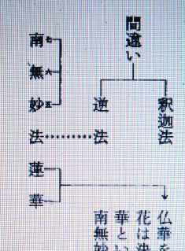
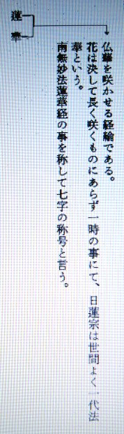
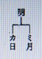

仏教について
仏教の起源について
明主様御講義 「宗教の根源と救世主の出現」 （昭和10年7月25日発行）
「地上の御経綸については、初め国常立尊が善一方の世界を出現させるべく御経綸遊ばされたが、
余り厳格なりし為諸々の神様が非常に煙たがり反対された為にこれは失敗し、いよいよ善悪二通りで進む事と今後なるのである。
二千六百年以前神武天皇に御神勅ありて日本統治をなされた。
素盞嗚尊は西洋にてイスラエル民族を造られたのである。
それがユダヤ民族であって、学問を以て世を開発することをお始めになられたのである。
一方伊都能売大神様を印度にお降しになり、布咀落迦（ふだらか）山にて南海大士観世音菩薩として仏教をお始めになり、この山にて仏教を釈迦に伝えられたのである。
その時の釈迦の名は善財童子と申されたのであるが、未だ若かりし時既に教を受けて居られたのである。
皆これは主神様が準備をなされたのである。
今日本においては神道、仏教、基督（キリスト）教とあるが、神道は一寸宗教とは言難いのである。
その中で天理教及金光教が宗教の形態をなし、公認教ではないが大本教も相当発展している、神道中での宗教であると言う事が出来る。
金光教は余り教理としても完全なものはないが大本、天理の二教は相当に形態をなしている。
キリスト教信者は日本で十万と言うが今は十万とはない。
華厳経に布咀落迦山に観世音菩薩あり、善財童子等大慈大悲教を説かれるのを聞いて居られたが、
その中に既に沢山の弟子が居られ、中にも侍者として二十八部衆在り、大弁財天、大梵天王、帝釈天王、金色孔雀、毘舎門天、阿修羅王等の外、ナーラヤナ金剛、ワーデラバーニ金剛の兄弟二人（この二人を仁王尊という）等の諸天が居られたとあるのを見ても、御釈迦様は観音様から御教を受けたことがよく判ります。
支那天台の祖南岳大師の記にも、「昔は霊山会場にあって妙法蓮華経を説き給い、今は西方浄土に在まして阿弥陀仏と名付け奉る。しかも人界普現して救世（くぜ）観音菩薩となり給う。故に過去現在未来に渉る三世の利益は元観音一体に帰す」とあります。
霊山会場とは布咀落迦山のことであります。
こういう訳で南岳大師の言うごとく、法華経も実は観音様が最初の骨子を説かれたもので、未来に渉り世界経綸の鍵は釈迦が七十三歳の時に観音様から秘かに示されたのである。
故に釈尊は吾七十三にして顕真実を得たと言われるのも、この事を指して言われたのであります。
それ故正法、像法、末法の後は仏滅が来る事を知らされたのであります。
仏が減すると言うことは観音様から知らされて初めて知られたのであります。
阿弥陀や釈迦は自分の事より外に出来んが、観音様は三位一体の御働きが出来る。
その観音様が御力を現わして居られないのは、阿弥陀と釈迦を余りにもてはやし過ぎて観音様を除外なされて居られた為であって、実に怪しからん事であります。
世界は仏教、キリスト教、マホメット教とこの三大宗教であって、これを主神が御中付になって造られたのであります。
仏教を説くには南無阿弥陀仏、南無妙法蓮華経の事から説いて行く事になります。
是を説いたのは釈迦如来である。逆如来となる。「さかさ」の意味なり。


仏華を咲かせる経綸である。
花は決して長く咲くものにあらず
一時の事にて、日蓮宗は世間よく一代法華という。
南無妙法蓮華経の事を称して七字の称号と言う。

日月即ち神を隠して妙の字と変えたのである。
日月とは観音様の事である。
カミは大の字にして五である。
南無阿弥陀仏の事を称して六字の名号と言う。

天の初めア行は天の位であって一番高い位である。
仏とは人間の向上したるものにして神の次のものなり。
天は五、中界六、地は七である。逆の弥勒の悪の教。
阿弥陀は素盞嗚尊の化神なり。

支那―中華―支那とは枝の事、エの事。
大＝日
中＝中華
小＝外国
（五字称号） 「大」
大は五大州にして五大州は日本を象ったものなり。
仏教には密教と顕教とあり、密教は六ケ敷（むずかし）いのである。
天台宗には一番多くあて字がある。
主神が素盞嗚尊に命ぜられユダヤ民族を造られ、物質を始められる様になられたのであるが、皆これは今まで来るべき道程で主神の御経綸であった。
未 来 過 去 現 在
最勝妙如来 正法妙如来 普光山王如来
日―観音―南海大士 三十三相どころか非常に沢山に御名がある。
勢至（せいし）菩薩といえば観音と共に働く時の名である。
（観音勢至 五十七歳）
月・・・裏・・・素盞嗚尊が月の神であってこれは暗の時の働きである。
月・・・表・・・月読尊も月の神であるが、これは照されている時の働きである。

月読尊とは月の世を見る
即月世見である。」 （「観音講座 第二講座」より）
明主様御講話 「仏教は永久的の教えでない」 （昭和10年4月4日）
「観音様が布咀落迦山（ふだらかさん）にお降り遊ばして、南海大士と申されておられた時のことである。
お釈迦様がお訪ねいたしていろいろお聞きになり、初めていままで知らなかったこと、
また悟れなかったことをうけたまわり、本当の悟りに入られたのである。
この時よりお釈迦様は、「見真実」となられた。
しかし、このことは時の来るまで発表することを許されないことなので、致し方なく法華経をその後お説きになられたが、
ただ一部分を明かすのみにて止めたのである。
最後の世に現われて、光明世界をお建てになる方は、観音様であることも判ったけれども、これも発表することができなかったために、
普門品（ふもんぼん）を説かれて観音様を礼賛されるに止められたのである。
仏が滅することもすべて知られたるために、「仏滅の世が来る」とお説きになり、この世は火宅だなどと申されたのであるが、
その実は、仏の時代のことであって、一度観音様がお越しになれば、この世は救われることもご存じになられたから、
時期の来るまでを仏教により少しでも善いほうへ導くようにと弘められたまでであって、
仏教は永久的の教えでないことは、これを見てもよく判ることであって、お経もすべて一部ずつを判らしたのである。」
明主様御講話 「日本人が仏教をつくった」 （昭和26年9月23日）
「それから、宗教篇ですね。
宗教篇と言う所でー結局、東洋は仏教、西洋はキリスト教ですが、キリスト教の方は日本人どころじゃない。
白人の方で良く分かっている。ただ、キリストと言うのは、なぜ生まれたか、一体キリストと言うのは、何の御魂か、どういう訳で生まれたかと言う事を書くつもりです。
それだけでそう余計に書く事がない。ところが仏教の方はなかなか有るんです。
その中の仏教の起源ですね。一体仏教は、神様の方から言うと、どういう訳で出来たかと言う事を書いてありますが、仏教は日本で出来た。
日本人が仏教をつくった。日本に広めるのは具合が悪い事が有ったので、神様はインドに行かれて、仏教を始めたんです。
それで化身ー化仏と言う訳ですね。
化仏と言うのは、日本の神様がインドに行って仏になったから化仏というので、それが本当です。
（御論文「仏教の起源」の後の御教え）
「幽現」と言うのは、「神幽現」と三つにならなければ本当じゃない。「神界」は分からない。「幽現」だけが分かっていた。
ですから、お釈迦さんが説いた事は、地獄、極楽と言う。
それから下で、それ以上の神界は説かないんですね。そこで「幽現」と説いた訳です。
（御論文「伊都能売神」「観世音菩薩」の後の御教え）
こんな具合で宗教篇もまだ色々あるんですが、色々実際上の事を根底として書いてありますから、信じやすい訳ですね。」
明主様御講話 「仏教の起源」 （昭和26年9月25日）
「まだ時間が有ったら仏教の起源と言うのを・・・これは面白いのですが・・・いずれ読ませます。
仏教は誰が始めたかと言うと、インド人ではない。
日本の神様が行って化身、化仏されて・・・伊都能売神様ですが、
伊都能売神様がお釈迦さんに教えられて、お釈迦さんがびっくりして広めたんです。
化仏と言うのは、神様が仏に化けたんです。
日本の神様はインドに行かれて、今度メシヤ教が出て五六七の世を造る、その準備に用意された、その準備に用意された。
それを「文明の創造」に書きつつあるんです。
だんだん知らせますからね。
そんな訳で、神様は前から、世界的に準備した。
だから、キリストもマホメットも、地上天国の用意のために、何千年も前に色々な事をされたんです。
そう言う事も、色々と書くつもりです。それを、最初は日本人に知らせますが、最後は世界中に知らせます。
これが「見真実」です。これは専売特許ではない。
全人類に知らせなければならない。
そうすれば、五六七の世が出来るんですね。」
現代仏教の衰亡について
明主様御教え 「仏教は復興するか」 （昭和10年4月8日発行）
「近頃、仏教復興の声が旺んになって、毎朝の新聞紙を見ても、仏書の新刊が一つや二つ、広告欄に見ない日は無い位である、
しからば、何が故にかかる傾向を生じたかを検討してみる時、どうしても、満州事変を想い起さない訳にはゆかない。
彼の満州事変と同時に日本の国策は、方向転換をなし、
次には彼の、連盟脱退という我国外交史上、空前の英断的事実が、それまでの追随外交を、見事に打棄ててしまった。
彼の松岡氏が思い切って、言いたいだけの事を言い退けたあの態度は、痛快であった。
しかも、彼は、碧眼紅毛人の真直中（まっただなか）において、日本精神を充分高揚した事である。
それは、長い間、日本人一般に深くも刻まれておった、洋崇思想を揺り動かしたからであった。
糅（か）てて加えて、次々起った、五、一五、及び血盟団等の事件は、さしも、青年に喰い入っておった、
マルクス主義の牙城に、大亀裂を生じさせてしまった。
しかも、時は恐ろしいもので我国産業の海外躍進という空前の事実が、
日本人上下の洋崇者を覚醒さした事は何としても愉快であった。
メイド・イン・ジャパンのマークが、欧米人の日常必需品にも、
アフリカの原住民の使用品にも貼られてあるではないか、
この事実は白人の驚歎よりも、日本人自身の方が、より大きい驚歎であった、
それまで、日本は戦争には強いが、他の文化は白人を凌（しの）げないと思っておった、
それが見事破られたから、ここに洋崇の衣を脱いで、躍進の輝かしい新衣を着、
世界を横行闊歩（かっぽ）せん気配を示すようになって来た。
ここにおいて日本は、日本の卓越せる民族性に、飜然自覚せざるを得なくなった。
僅六十余年に、欧米の文化を吸収し今度は逆に、彼らへ対しての、指導的立場に変って来た。
そこでこれはたしかに何物かが無くてはならないと言う見地から、日本自身の探求に取掛ったのである。
そのよって来たる日本人の、思想の根元であるそれはどこから来たんだ、という結論が、
仏教研究熱になって、それが仏典の刊行となり、新聞紙の宗教欄となり、ラジオの放送となったんである。
蓋（けだ）し、日本人の病癖たる、一時的流行に終りはしまいかと思う。
例えば、古葛籠（つづら）を掻き廻して、祖先の遺品を検（しら）べてみるのと同じで、
彼の空海、親鸞、日蓮等が、血の出る様な苦難に依って得たる珠玉は、すでに発表し尽されている、
今日の仏教学者や流行僧等が、牛肉を食いながら、暖い着物を着て、畳の上で研究したところで、
古えの聖者以上の何物が得らるるであろう。
故に今日の仏教復興とは、機を視るに敏な出版屋が際物（きわもの）的の利益を夢み、
学者流行僧等は、傑僧の伝記遺文等を蒐集して編み、原稿を稼ぐ位なところで、
そんな事をしたり、講演をやったりしてる裡（うち）に、
段々民衆に飽かれて火が消えるようになるのではないかと思う。」
明主様御教え 「仏教は現代を救う力在りや」 （昭和10年8月16日発行）
「釈迦牟尼如来がなぜ仏法を開始されたかと云うに、
元来、釈迦出現より相当古い頃から、バラモン教が盛んであって法界の覚りを得る方法として、非常な難行苦行をしたのである。
今日絵画彫刻等に残って居る羅漢像を見れば解るごとく、
彼らは皆バラモン行者であって、その苦行の姿を写したものである、
有名な面壁九年石座をした達磨もそれである。
それを観た当時の釈尊は、大いに歎いてかかる苦行に寄らずして大覚者となり得る法もあらばと説いたのが即ち仏法である。
故に、従来と比べて苦行に換えるに、易行（いぎょう）の道を説いてくれた釈尊に対し、
当時の民衆がその徳を讃称えたのは無理のない事である。
しかし良く考えてみるがいい、二千五百有余年前の印度の社会を、
当時の印度人は自然に稔る米を果実を喰って森林や山に入り冥想に耽って居ても生きて行かれたのである。
今日のごとく英国の搾取も国際競争の悩みも、無かったのであるから
生活苦等有り得るはずが無く至極呑気なものであって
現代人の想像も付かない程であったであろう。
故にいか程浩瀚（こうかん）な物でも・・・何年掛ろうとも経文を読んで、悟りを得ようとしたのは当然の事である。
しかるに現代の日本を、社会を生活を観るが良い。二千五百年以前の印度人と比較が出来ようか、
幾ら悟りを得たいと云って八万四千の経文を読む事は絶対不可能で、
半分も読まない内に、餓死して仕舞う。
そうして梵語を漢訳したそれを、漢文をほとんど学ばない現代日本人が読むのであるからさっぱり意味が判らない。
仏教学者でさえが、人に依り幾多解釈の相違がある位で在るから、
何ぞ大衆が真解する事を得んやである。
読む時さえも有たず、読めど解釈出来ぬという、
古代外国産の代物を持って今更現代人を救うなど言うは、
余りに時代錯誤のはなはだしきものではないか、
この意味によって、吾々は仏教は勲功のあった国宝的遺物として、ただ保存するだけに止めておいて、
現代に、日本人に適合した溌剌とした新興宗教を求めなくてはなるまい、それが真理ではなかろうか。」
明主様御教え 「醒めよ既成宗教家と現代医学者」 （昭和11年1月1日発行）
「近時宗教復興の喧（かまび）すしい声に逐（お）い立てられるように躍り出たのは、主に仏教側で仏教学者等である。
彼らは得々として口に筆に、昔からの諸々の賢哲によって言い尽された説話や理論を、丹念に焼き直して大いに売りつけようと、
大衆に対（むか）って怒号し続けて居る。
それにも拘わらず大衆は縁日を素見（すけん）するように、通り一遍の一顧を与えるに過ぎないのである。
中にはインテリに属する人で、科学にあきたらない結果、
文献等を漁って研究的に手を染める者もあるが、
これらはいつまで経っても、信仰の境地までは進めない人々で、
最後まで第三者の立場を出られないのである。
これが今日笛を吹いてる仏教家の一群と、踊らない大衆の態度との有のままのスケッチである。
他方新興宗教と名づけられ、邪教インチキとしてあらゆる漫罵を浴びつつある一群がある。
この一群は治病を第一の看板として活躍し、
ともかく既成宗教群から眼の仇にされるだけの勢力を獲て終って居るのである。
邪教かインチキかそれは今ここでは言わないが、
ただ何故に既成宗教が信徒獲得に無力であり、
新興宗教がそれに成功しつつあるかを言って見たいのである。
今日の世相の行詰りと困惑裡に喘いで居る大衆は、一体何を求めて居るのであろうか？
彼らは切実に何物かに縋らなければ、一日として過ごされないまでに、切迫して居るのは事実である。
しかるにこの大衆が要望して居るそのある物をハッキリと既成宗教家等は掴んで居ない。
否掴んでもそのある物を与え得られないのかも知れないが、畢竟（ひっきょう）問題はこの点に存するのである。
既成宗教家群が大童（おおわらわ）になって怒鳴って居る事と、書いて居る事とを一瞥（いちべつ）して見るがよい。
それは緊迫せる実生活と何ら交渉の無い仏教理論である。
三諦円融がどうの、大乗仏教がどうのと云う様な、食うに困らない有閑人か、学究の徒輩が弄（もてあそ）ぶに相応の代物である。
故に幾何（いくら）怒鳴っても笛を吹いても、気の毒ながら効果の無いのは当然の話である。
宗教復興の声の大きさの割合に対して、それが為めに仏教信徒が増加すると云う傾向は、恐らくどこにも見出せないであろう。
これに反して新興宗教があらゆる罵詈（ばり）讒謗（ざんぼう）を浴せられながらも、
素晴らしい発展性を現わし、急速度に信徒が増加して往くことであり、
しかも新興宗教は既成宗教の罵詈に酬いようとはしない。
あるいは酬いる時間が無い為めかも知れないが、
ただ真向に教線拡張にのみ専念して居るのである。
外面は頗（すこぶ）る進歩して居るように見えて、
その実績の余り挙らない西洋医学にも罪はあるのである。
西洋医学でその誇張するごとくに病気が治り、健康を全うし得らるるならば
新興宗教に趨（はし）る者は恐らくほとんど有り得ないであろう。
故に私は既成宗教家及び現代医学者に警告したいのである。
それは新興宗教に発展性を与えて居るそれ自身は、実は既成宗教と医学者であると云うことである。
それ故既成宗教家及び医学者等は、新興宗教へ対して漫罵を浴せる前に、
まず充分に自己省察をなして、その根本理由であるところの、
大衆の悩める病気をして、新興宗教へ趨らないまでに、速かに治してやることである。
それ以外には新興宗教を衰滅せしむべき方法は、断じて無い事を認識すべきである。
もしこの重点を認識出来ないで、相変らず低劣なる独断的漫罵を能事とする限り、
既成宗教に在る信徒は、日に月に新興宗教に転向者の数を増すであろう。
又病院及び医院は、ついには門前雀羅（じゃくら）を張ると云うまでに、
到らないとも限らないであろうことを戒告したいのである。」